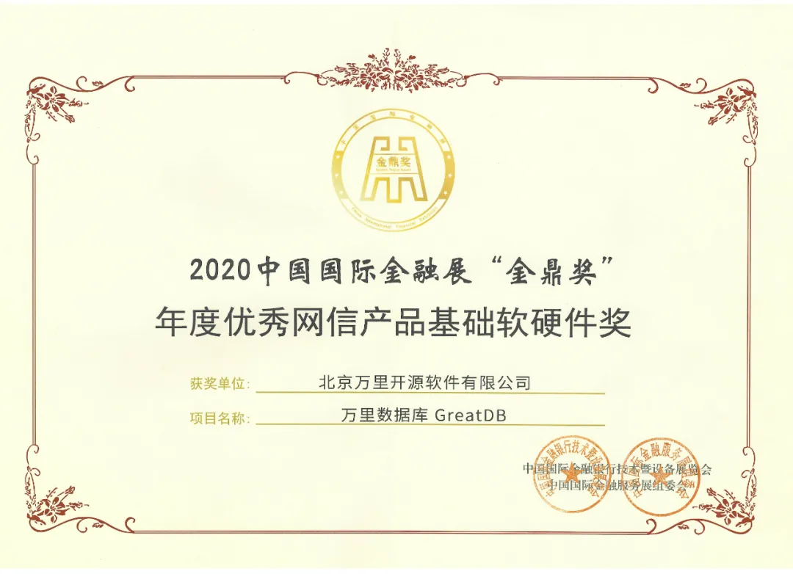
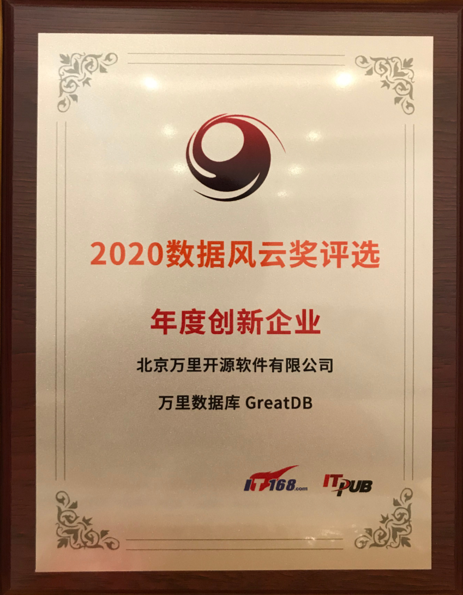
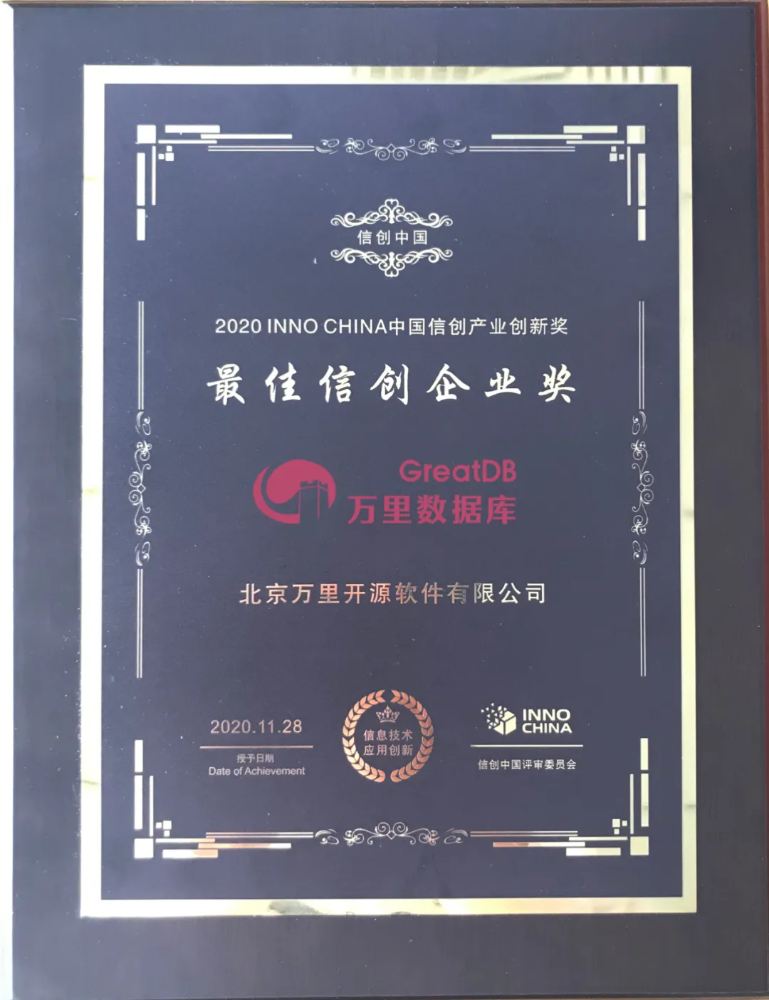
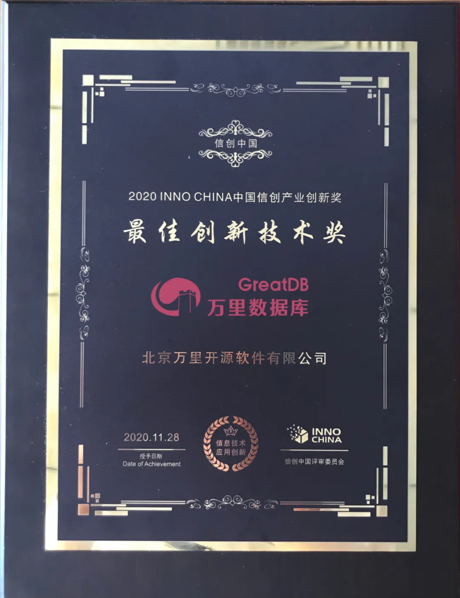
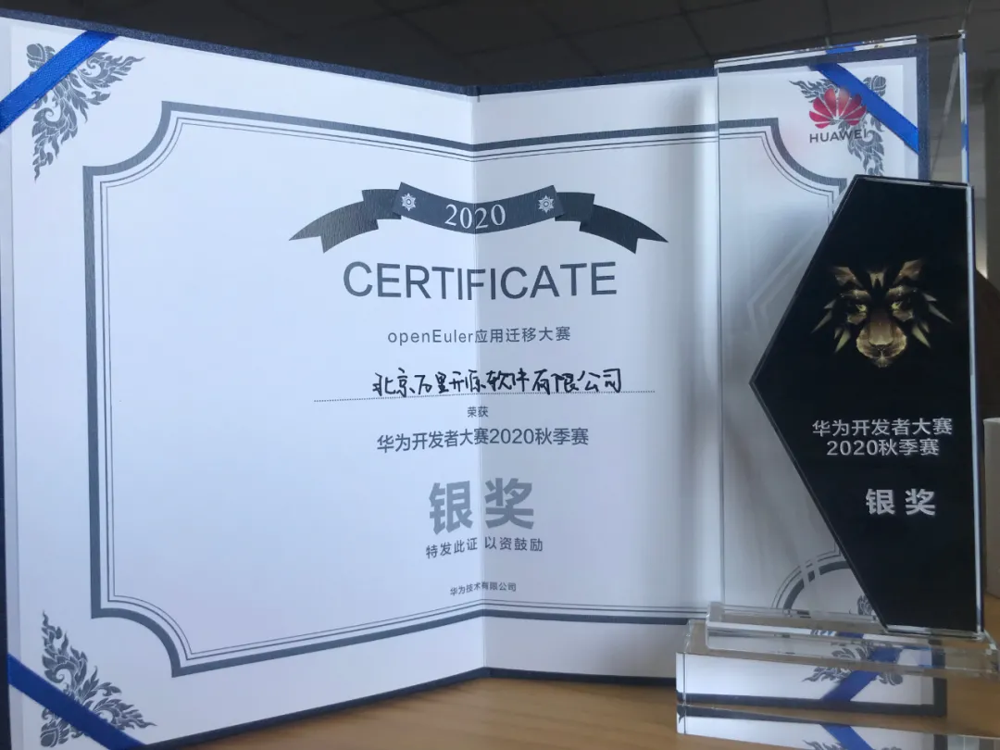
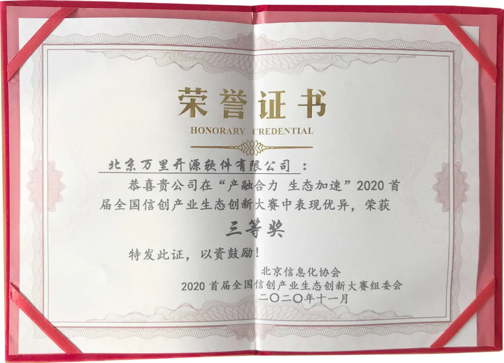
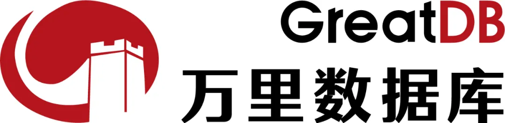

3分钟了解万里数据库的2020
感谢大家对万里数据库的关注和陪伴。2020年是公司成立20周年，也是公司在信息技术应用创新领域里程碑式的一年。在全球疫情形式严峻、国际关系错综复杂的大背景下，万里数据库迎难而上，为2020年画上了完美的句号。
2021年又是一个新的起点，我们将总结和学习过往的经验，续写新的篇章。
大客户合作
2020年，万里数据库与光大银行、光大科技基于GreatDB源码联合研发了EverDB数据库，并在光大银行云缴费、统一支付等系统进行推广应用。
2020年7月，万里数据库中标中移动自主可控OLTP数据库联合创新项目，在分布式数据库评标中总得分排名第一，中标份额为60%，已在中国移动智慧中台（西藏工程）项目、山东移动数据中台等项目完成上线。
2020年，万里数据库在国家电网的应用进一步扩大，联合研发的SGRDB四期项目有序推进，已在8个网省公司上线试运行。12月，万里数据库再度入围国网信息通信产业集团有限公司2021年度的框架采购项目。
2020年12月，公司中标2020-2021年联通沃音乐大数据服务项目，联合打造基于国产数据库的行业大数据综合解决方案，共同迎来5G发展新机遇，开拓全国行业市场。
信创生态
2020年，万里数据库在信创生态建设方面获得长足进展，已与国内主流芯片、服务器、操作系统、中间件、云厂商等完成适配工作，并加入金融信息技术创新生态实验室、北京金融科技产业联盟等多个行业组织，共同推进信息技术应用创新产业发展。
行业测评
2020年，万里数据库通过了多个技术评测，包括：工信部分布式数据库信创产品质量测试「满足全部测试项」、国家信息中心软件测评中心的软件信息安全性评测、中国信通院第10批大数据能力测评「分布式事务型数据库」。
业界认可
2020年，万里数据库获得业界认可，荣膺各类奖项。
代表性奖项




参赛获奖
2020年，万里数据库积极参与各项技术大赛，并荣获多项荣誉。

华为
信创

市场活动
2020年，万里数据库积极参与各类市场活动，品牌知名度和影响力逐步扩大。
2020中国国际金融展
2020第十四届深圳国际金融博览会
2020数据技术嘉年华（DTC）
2020通明湖信息技术应用创新论坛
2020中国信创产业发展峰会
2020第十一届数据库技术大会（DTCC）
新品牌，新征程
2020年12月，正式启用“万里数据库”新品牌，英文名称为「GreatDB」，并启用新版品牌标识（LOGO），启用公司新官网「www.greatdb.com」，实现品牌升级。
新版本品牌标识（LOGO)

推荐阅读
3. 万里数据库重磅亮相DTCC 2020，斩获“年度创新企业”奖
万里数据库简介
万里数据库是北京万里开源软件有限公司自主研发的新一代分布式数据库，经过10余年的应用验证，在功能、性能、稳定性、易用性等方面均处于行业领先水平，历经500多个业务场景的锤炼，已广泛应用于金融、能源、通信、政府、交通等多个行业。


扫码二维码
关注公众号